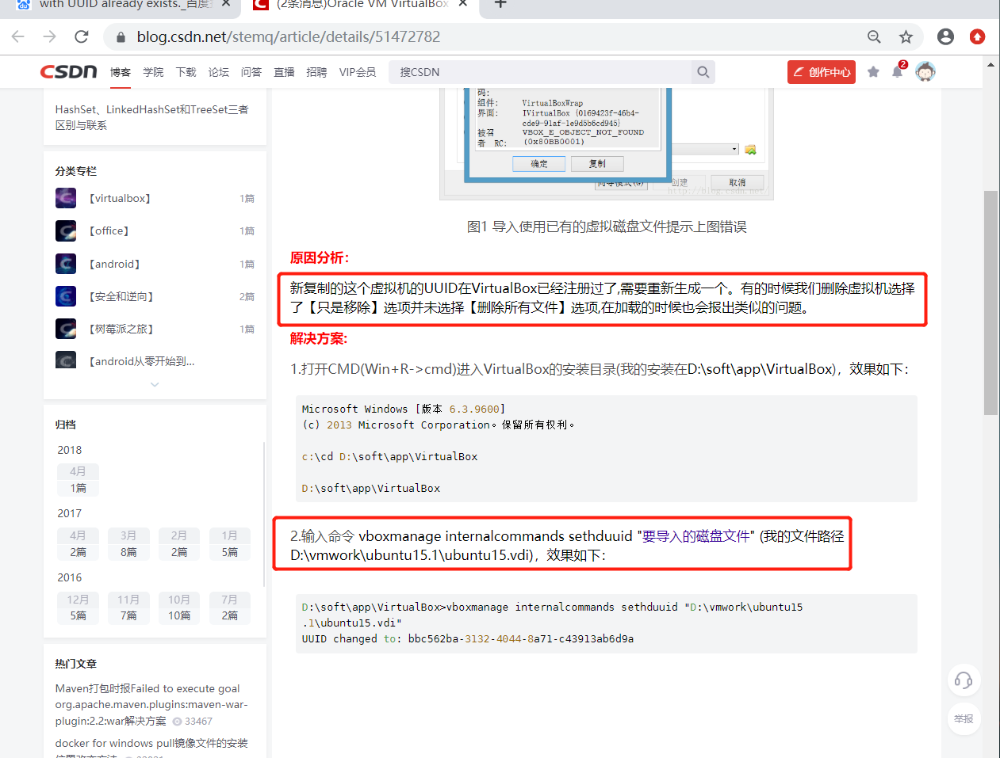

导入已有虚拟机(已有虚拟机被移除但没删除)

UUID问题
-----------------------------------------------------------------
报错：
-----------------------------------------------------------------
0x80BB0001
0x80070057
Cannot register the DVD image 'D:\allInstall\centos7Install\CentOS-7-x86_64-DVD-1908.iso'
{4ede4a01-7658-4b2c-b218-ad6e462bdb96} because a CD/DVD image 'D:\allInstall\centos7Install\CentOS-7-x86_64-DVD-1908.iso'
with UUID {0bea1374-61b0-420b-bfac-9ea3469d5784} already exists.
返回 代码:
E_INVALIDARG (0x80070057)
E_INVALIDARG (0x80070057)
组件:
VirtualBoxWrap
界面:
IVirtualBox {d0a0163f-e254-4e5b-a1f2-011cf991c38d}
--------------------------------------------------------------
解决:
---------------------------------------------------------------
执行(生成新的uuid)
D:\allInstall\virtureboxInstall>VBoxManage internalcommands sethduuid "D:\allInstall\virtualboxCentos7\Centos 7_\Centos 7_.vdi"